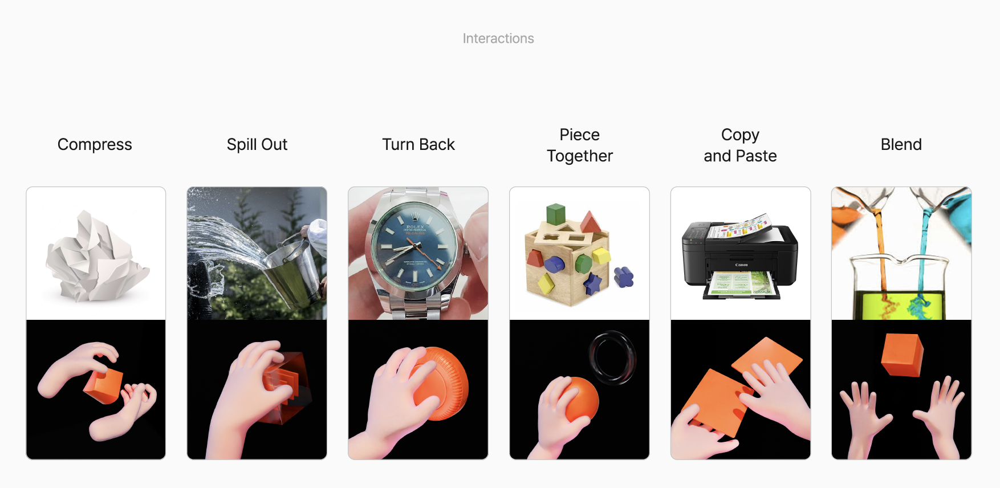

어떤 메시지를? 왜?
What message? Why?
GRAPHIC #37
Introduction to Computaion
무엇을 말할 것인가?
What do I want to say?
헤르츠 이야기
탈물질시대의 비평적 이야기
낯설게 하기
Making it Unfamiliar
『기술의 사회적 가치와 의미를 탐색하는 매개로서 디자인 픽션』
『Design Fiction as a Medium for Exploring the Social Values and Meanings of Technology』
디자인 픽션의 목적은 기술의 가치에 대한 선행적 실험과 비평적 탐색, 사회적 논의를 위한 것.
Purpose of design fiction is for prior experiments, critical exploration, and social discussion on the value of technology.
『기술의 사회적 가치와 의미를 탐색하는 매개로서 디자인 픽션』
『Design Fiction as a Medium for Exploring the Social Values and Meanings of Technology』
기술, 현상을 바탕으로 한 ‘만약에?’를 표현 할 수행적 프로토타입
Performative prototype based on ‘what if?’ based on technology and situation.
#1
마이너 이미지 아카이브
Minor Image Archive
특정 문화권에 편향된 인공지능 생성 분야, 언어 문화권의 한계, 보편적 관념의 실체화, 특정 이미지의 보편화, 보편적인의 기준은?
Biased AI generative technology, limitation of language cultural society, making specific image as universal thing, what is the point of universal? normal?
마이너 이미지, 비표준적 심상은 남아있을까?
Minor images? not normal can be lasted?
비표준적 심상이 담긴 이미지들을 아카이브하여 학습 모델에 포함시킬 방법 또는 필요성 찾아 제안하는
Archiving not normal images, find way to put on AI model, or suggest why do we need it.
#2
대체 환경 기술 속 미래
Future of Alternative World Technology
텍스트 기반의 생성이 자연스러운 환경 속 사용자 맞춤 적응형 환경
Customized adaptive environments on text-based generation is natural.
AI 친화적 글짓기?
AI-friendly writing?
다양성과 개방성을 위한 대체 환경 기술은?
What about alternative envirionment technology for diversity and openness?
#3
알고리즘-프리 운동
Algorithm-free Movement
사용자의 맞춤 환경을 제어하는 알고리즘 기술 속 빅테크 기업들의 권한 남용
Abuse of Big Tech companies' rights in algorithmic technology to control user customization.
점점 더 시야가 갇히고 사고가 개인화되며 한정되는 문제
Problems that are increasingly confined, personalized, and limited in thinking.
만약 탈-알고리즘 운동이 일어난다면? 어떤 형태로?
What if an anti-algorithm movement occurs? What form will it be?
물리적 환경과 가상 공간 속 구분, 취사 선택의 용이성, 직접 고르게 하는 제어감이 필요하다면?
Differentiation on physical and virtual, choice matters?
어떻게?
How?
가정된 상황을 비판하거나 해결을 제안하는 수행적 프로토타입 제작
Create performative prototypes that criticize or suggest resolution of assumed situations
아두이노와 같은 피지컬 컴퓨팅 기술
Physical Computing like an Arduino.
다양한 센서 실험
Diverse sensor experiments

느닷없이 참여하게 된 선배분의 졸전 프로젝트, Morpheus
돈 얼마든지 줄테니까 하고 싶은거 다해! 재료비 얼마든지!
Do whatever you want! As much as you want!
그리고 지금까지 해왔던 TouchDesigner 실시간 인터렉티브 그래픽
And as usual approach, touchdesigner realtime interactive graphic.
“인공지능는 망치만도 못하다.”
“Artificial intelligence is no better than a hammer.”
기술 단계의 복잡성이 커질수록 멀어지는 거리감
Distancing as the complexity of the technology phase increases.
정교하게 프로그래밍되고 디지털화 될수록 내가 사람을 한가지로 유도하는
The more sophisticatedly programmed and digitized it is, the more I drive people into one thing.
물리적인 설치와 퍼포먼스 장소와 상호작용
Physical installation and performance location interaction
물리적 참여형 형태의 인터렉션에 대한 관심을 바탕으로 한
THHA v1